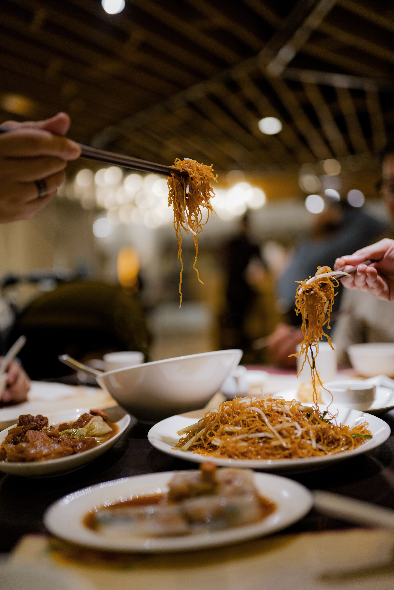

Grand Cuisine
Welcome to Grand Cuisine
-

Chinese
Chinese food staples such as rice, soy sauce, noodles, tea, chili oil and tofu, and utensils such as chopsticks and the wok, can now be found worldwide. The preferences for seasoning and cooking techniques of Chinese provinces depend on differences in historical background and ethnic groups
-

Mexican
Mexican food can include tacos, quesadillas, pambazos, tamales, huaraches, alambres, al pastor, and food not suitable to cook at home, including barbacoa, carnitas, and since many homes in Mexico do not have or make use of ovens, roasted chicken.
-
Continental
Continental food refers to dishes made and consumed in the European countries. Dishes of French, Spanish and Italian cuisine fall under the category of 'Continental food'. The key specialty of this food is, they concentrate more on ingredients like olive oil, wine, herbs and minimal spices